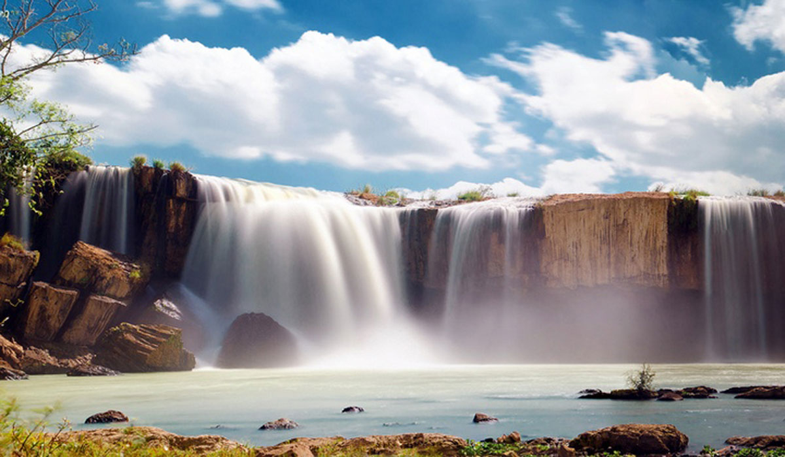

HELLO, IT'S NICE TO MEET YOU

Đắk Nông là một tỉnh thuộc vùng Tây Nguyên, miền Trung, Việt Nam.Đắk Nông nằm trọn trên cao nguyên M’Nông,
với độ cao trung bình từ 600 mét đến 700 mét so với mặt nước biển, cao nhất là ở Tà Đùng với độ cao lên đến 1.982 mét.
Nhìn chung địa hình Đắk Nông chạy dài và thấp dần từ đông sang tây.
Nét đặc sắc của Đắk Nông có lẽ vẫn phần nào là rất nhiều của Đắk Lắk do một thời gian dài tỉnh này là một khu vực của Đắk Lắk.
Vùng đất này có nền văn hóa cổ truyền khá đa dạng của nhiều dân tộc đậm nét truyền thống và bản sắc riêng. Nơi đây còn lưu giữ nhiều pho sử thi
truyền miệng rất độc đáo như sử thi Đam San dài hàng ngàn câu. Các luật tục cổ, kiến trúc nhà sàn, nhà rông và tượng nhà mồ còn chứa bao điều bí ẩn đầy hấp dẫn.
Đăk Nông là vùng đất sinh sống từ hàng ngàn đời của đồng bào các dân tộc tại chỗ, đồng thời cũng là vùng đất quần tụ của cư dân từ nhiều vùng miền về sinh cơ, lập nghiệp nên đời sống tâm linh, tôn giáo, tín ngưỡng cũng vô cùng phong phú.
Ngoài ra, đồng bào các dân tộc Đăk Nông còn có rất nhiều tín ngưỡng để tôn thờ, đặc biệt là đồng bào các dân tộc tại chỗ thờ cúng Yàng (Trời), thần Núi, thần Sông v.v. và rất nhiều lễ hội như: Lễ hội Đâm trâu (ăn trâu).
Lễ mừng nhà mới, Lễ mừng mùa, Lễ bỏ mả .v.v. phong phú và đặc sắc.
Đắk Nông, nơi hội tụ của hơn 40 dân tộc sinh sống, mỗi dân tộc đều có truyền thống văn hóa riêng. Bởi vậy, các món ăn ngon ở Đắk Nông tương đối
đa dạng và đậm đà bản sắc dân tộc. Với dân tộc M’nông, Mạ, Ê đê, các món ăn được chế biến khá đơn giản, chủ yếu là luộc, nướng hoặc nấu canh nhưng điều đáng chú ý là c
ác món đều có sự kết hợp giữa phong tục, giá trị văn hóa cộng đồng.
Ngoài ra, Đắk Nông còn có đồng bào các dân tộc phía Bắc vào lập nghiệp,
sinh sống và mang theo những món ăn đặc sản của dân tộc mình, tạo nên sự phong phú của ẩm thực trên vùng đất mới.
Chỉ cần một lần đặt chân đến mảnh đất Đắk Nông, mọi du khách đều sẽ bị mê hoặc bởi thiên nhiên núi rừng hùng vĩ, con người thân thiện và nhiều món ăn hấp dẫn.
Và điều mà nhiều du khách cảm thấy tò mò nhất chắc hẳn là đặc sản Phú Yên phải không nào? Vậy vùng đất này có những món ăn nào có thể khiến du khách hấp dẫn đến như vậy!
Hãy để VN Foods giúp bạn hiểu hơn về văn hoá ẩm thực nơi đây nhé!